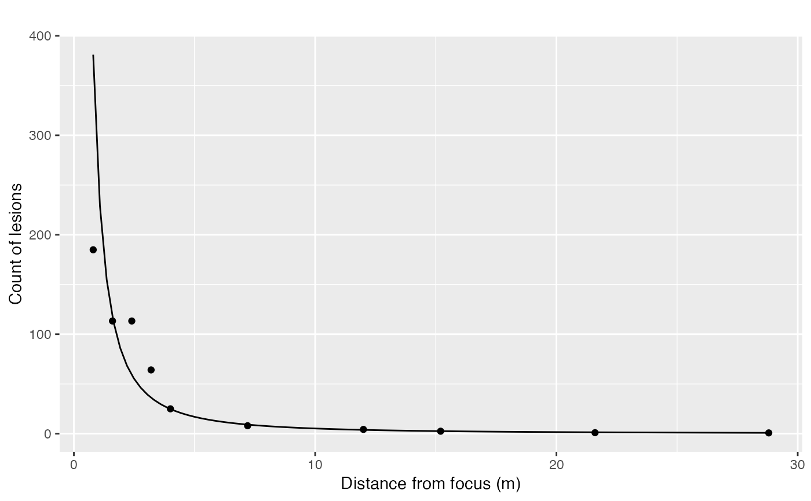

This function fits three gradient models (exponential, power, and modified power) to given data. It then ranks the models based on their R-squared values and returns diagnostic plots for each model.
Value
A list containing:
- data
The input data, which will include an additional column 'mod_x'.
- results_table
A table of the model parameters and R-squared values.
- plot_exponential
Diagnostic plot for the exponential model.
- plot_power
Diagnostic plot for the power model.
- plot_modified_power
Diagnostic plot for the modified power model.
- plot_exponential_original
Plot of the original data with the exponential model fit.
- plot_power_original
Plot of the original data with the power model fit.
- plot_modified_power_original
Plot of the original data with the modified power model fit.
See also
Other Spatial analysis:
AFSD(),
BPL(),
count_subareas(),
count_subareas_random(),
join_count(),
oruns_test(),
oruns_test_boustrophedon(),
oruns_test_byrowcol(),
plot_AFSD()
Examples
x <- c(0.8, 1.6, 2.4, 3.2, 4, 7.2, 12, 15.2, 21.6, 28.8)
Y <- c(184.9, 113.3, 113.3, 64.1, 25, 8, 4.3, 2.5, 1, 0.8)
grad1 <- data.frame(x = x, Y = Y)
library(ggplot2)
mg <- fit_gradients(grad1, C = 0.4)
mg$plot_power_original +
labs(title = "", x = "Distance from focus (m)", y = "Count of lesions")
